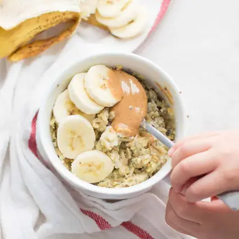

Oatmeal and Eggs for Breakfast

Ingredients
- 1/2 cup (50g) rolled oats
- 2/3 cups milk
- 1 medium egg, well whisked
- 1 teaspoon chia or flax seeds (optional but highly recommended)
- Optional: pure maple syrup, date syrup, or honey (if over 1 years of age)
Steps
- In a microwave-safe bowl or mug, mix the basic ingredients + additional add-ins (see below for some ideas to help get you started)
- microwave on high for 1 1/2 min, stir, and microwave for another 30-45 seconds, until desired consistency is achieved.
- Add the stir-ins. Feel free to add any other desired toppings like extra milk, yogurt, nut butter, seeds, fruit, etc.
- Heat 1 cup of milk or water on the stove and once it simmers, pour in 1/2 cup of oats. Cook over medium heat, stirring, until most of the liquid has been absorbed, about 5-7 minutes.
- Add in one well-whisked egg, stirring vigorously. Add in the extra ingredients as suggested below. Thin out with additional liquid as needed.
Recipe by Min Kwon · Kidfriendly Meals, from MJ and Hungryman. Saved here for personal use; the original has the full notes, tips and photos. Open original